Ichigo meets Rukia and becomes a substitute soul reaper. He learns how to fight Hollows
to protect his hometown. Rukia then gets captured by the Byakuya and Renji because she committed
a crime, transferring her powers to Ichigo.
Ichigo first meets Rukia and becomes a substitute soul reaper.
Renji and Ichigo fought in the streets of Karakura Town, and Ichigo got killed
by Byakuya, but he was saved by Kisuke.
Kisuke trains Ichigo in getting his Soul Reaper powers and massive sword, Zangetsu.
Soul Society Arc
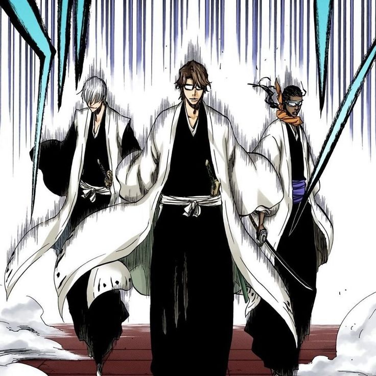
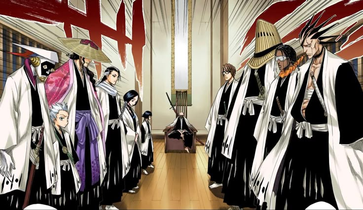
Rukia is taken back to the Soul Society to be executed for giving her powers to a human.
Ichigo and his friends invade the spirit world to save her. They have to fight through
the 13 Squads of elite Soul Reaper Captains.
Key Characters: Byakuya, Kenpachi, Yoruichi, Ganju, and The Captains and Lieutenants.
Important Moments:
Ichigo and his friends invade the Soul Society to save Rukia.
The introduction of the Soul Society and the 13 Squads.
Ichigo saves Rukia from execution on time with one of the best entrances.
He also won a 1v3 battle against three Lieutenants after saving Rukia.
Ichigo fights against Byakuya in a legendary battle where he reveals his Bankai for the first time.
Aizen is revealed to be the main antagonist and begins his plan for revenge.
Arrancar & Hueco Mundo Arc
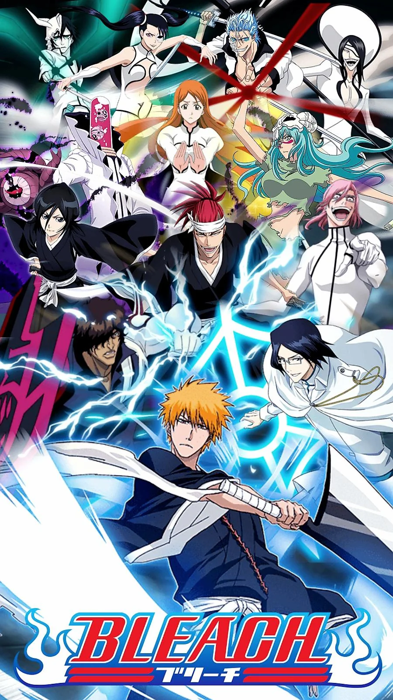
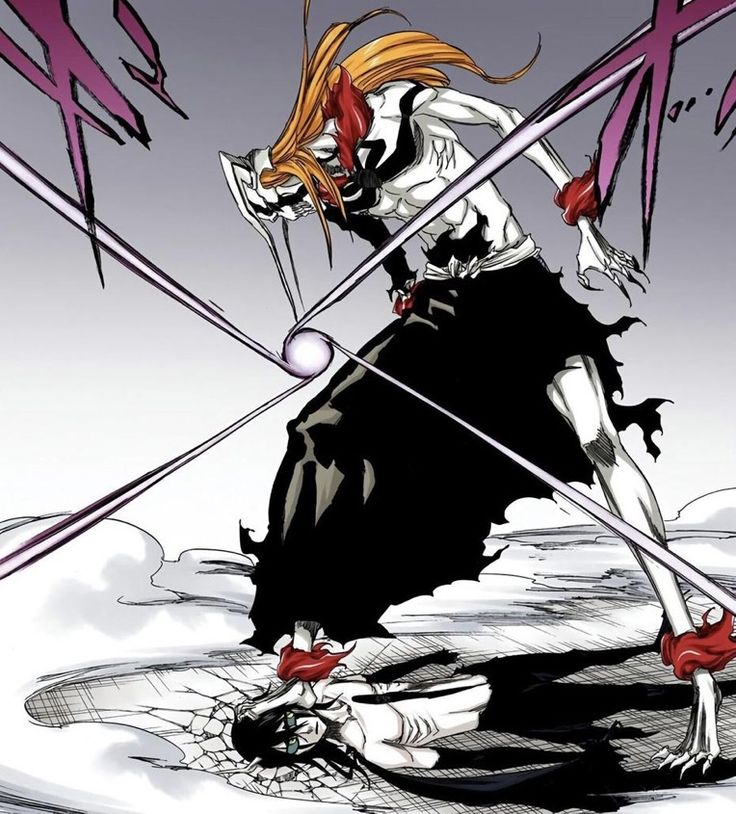
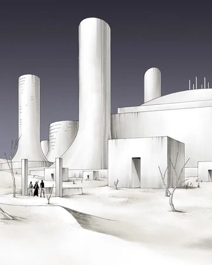
Aizen creates an army of evolved Hollows called Arrancars. After they kidnap Orihime, Ichigo
leads a rescue mission into a desert world called Hueco Mundo to face the ten strongest warriors,
known as the Espada.
Key Characters: Sosuke Aizen, Grimmjow, Ulquiorra, Nel, The Espadas, and Vizards.
Important Moments:
Ichigo meets the Vizards, who were former captains and lieutenant. They taught him to control his Hollow powers.
Ulquiorra and Yammy arrive in the world of the living.
Ichigo fights against the Espada Grimmjow in a brutal street fight.
The final showdown between Ichigo and Grimmjow in the desert.
Ichigo turns into a Full Hollow known as the Vasto Lorde to defeat Ulquiorra.
Fake Karakura Town Arc
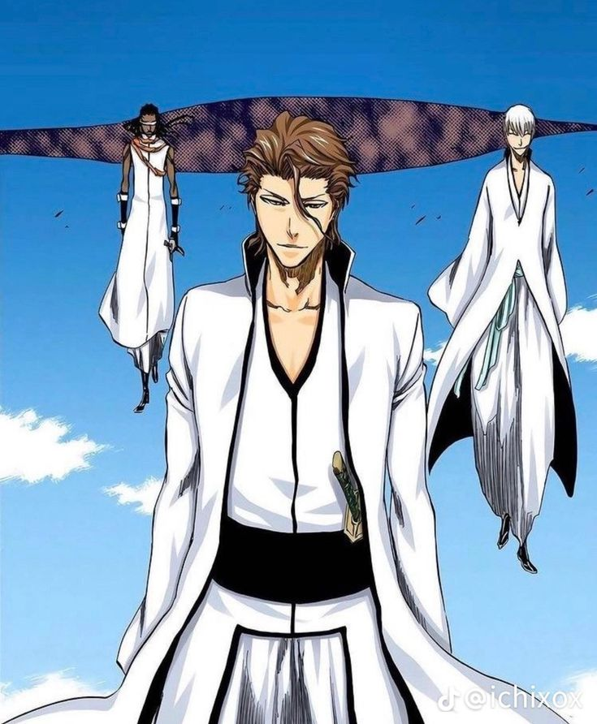
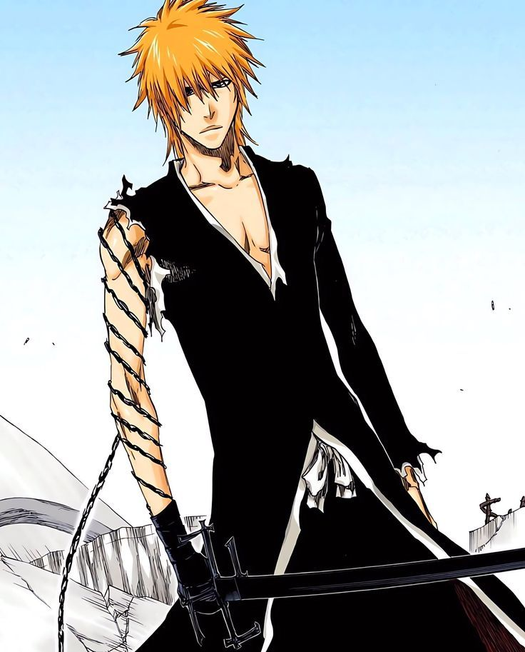
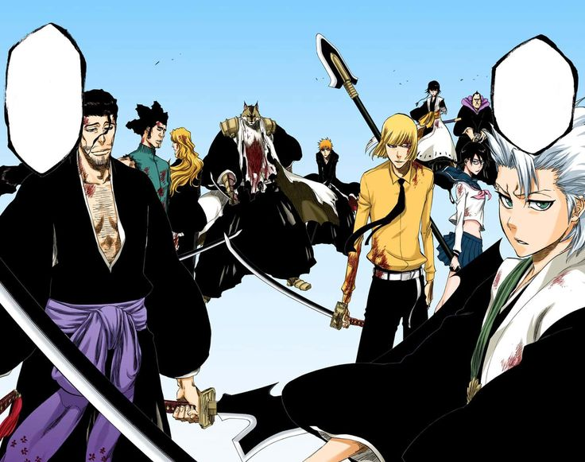
While Ichigo is fighting in Hueco Mundo, Aizen leads his top three Espada to the human world to destroy
Karakura Town. The Gotei 13 Captains meet them there in a "fake" version of the city created by
Kisuke Urahara to protect the citizens. This arc features the final, brutal showdown against Aizen.
Key Characters: Sosuke Aizen, Kisuke Urahara, Isshin Kurosaki,The Captains, The Vizards, and the Espadas.
Important Moments:
Kisuke Urahara creates a fake version of Karakura Town to avoid the actual Karakura Town in getting destroyed.
Ichigo returns from Hueco Mundo to defeat Aizen once and for all. He uses his Final Getsuga Tensho to defeat Aizen,
sacrificing his soul reaper powers.
The Lost Substitute Shinigami Arc
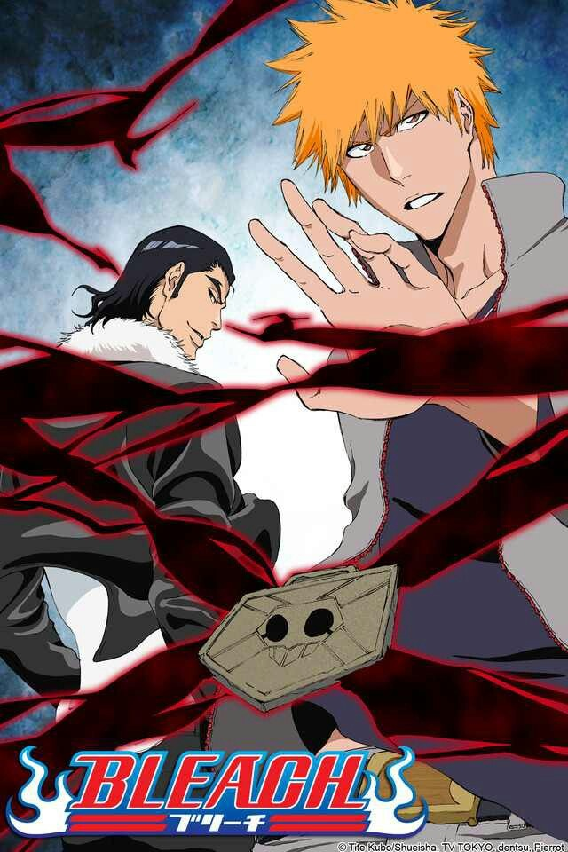
After losing his soul reaper powers, Ichigo struggles to live a normal life. He meets a group of humans with special abilities
called Fullbringers, who offer to help him regain his powers. However, they have their own hidden agenda, and Ichigo must fight
against them to protect his friends.
Key Characters: The Fullbringers, Kugo Ginjo, Shukuro Tsukishima, Kenpachi, Ikkaku, Renji, Toshiro, and Byakuya.
Important Moments:
Ichigo meets the Fullbringers, who are humans with special abilities.
Ichigo struggles to fight Tsukishima, a Fullbringer that tricks others, except Ichigo, into thinking he is a beloved family member.
Ichigo regains his soul reaper powers with the help of the Rukia Kuchiki.
Kenpachi, Byakuya, Ikkaku, Renji, and Toshiro kill the Fullbringers with
Thousand Year Blood War Arc
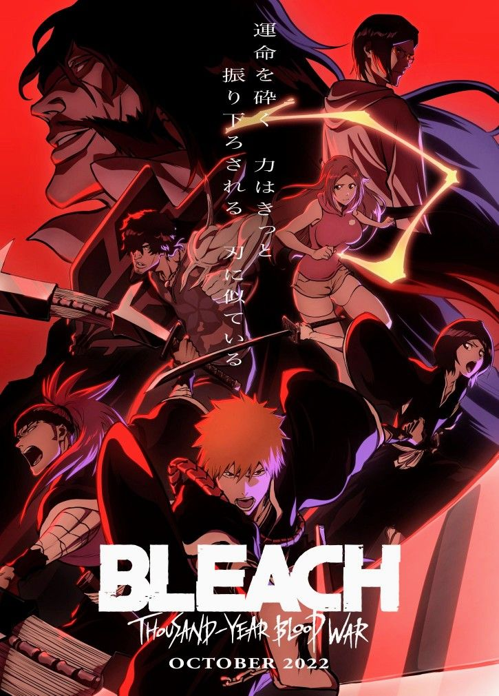
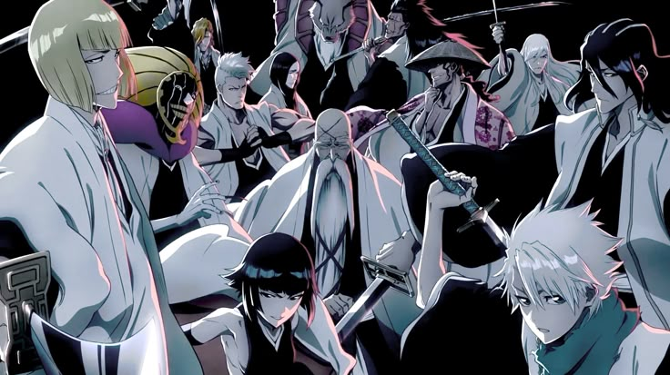
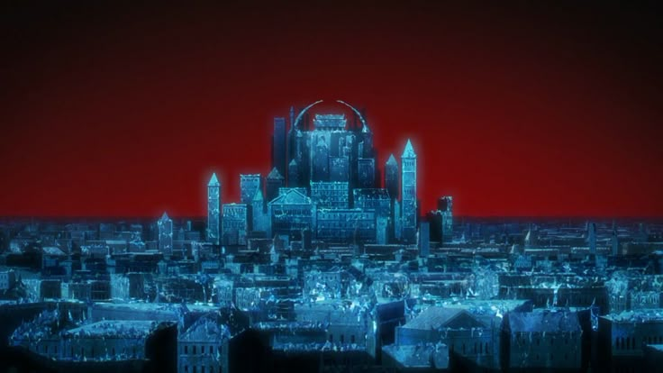
The ultimate enemy—the Quincy—returns after hiding for 1,000 years. Led by their king, Yhwach, they invade the Soul
Society to destroy everything. Ichigo must travel to the Royal Palace to discover the truth about his mother
and his true power.
Key Characters: Ichigo Kurosaki, Yhwach, The Sternritters, The Captains, and Ichigo's friends.
Important Moments:
The introduction of the Quincy and their unique abilities.
The brutal battles between the Quincy and the Soul Reapers.
The death of Head Captain Yamamoto.
Ichigo forging his true dual Zangetsu at the Royal Palace.